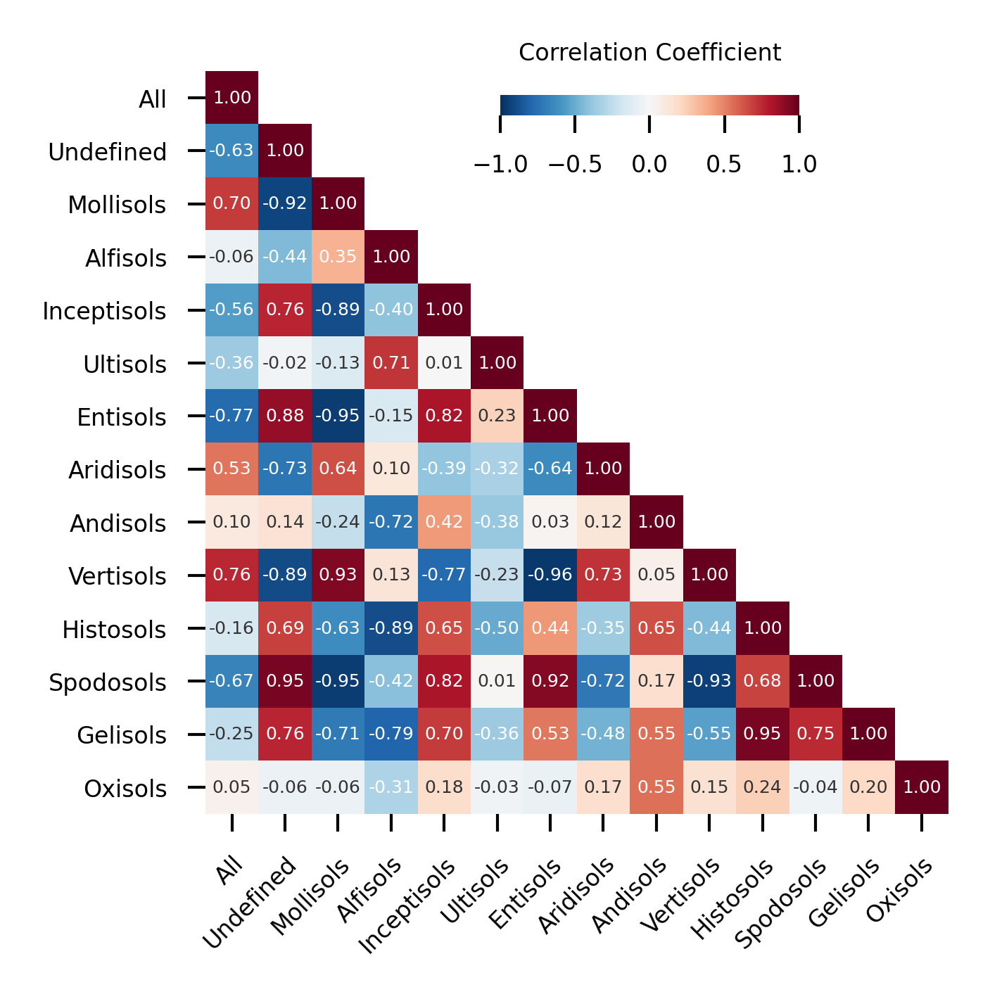

if 'google.colab' in str(get_ipython()):
from google.colab import drive
drive.mount('/content/drive', force_remount=False)
!pip install mirzai
else:6.2. GradientShap values correlation
Visualizing the (Pearson) correlation betwee GradientShap values aggregated by Soil Taxonomy Orders

# Python utils
from pathlib import Path
import pickle
# mirzai utilities
from mirzai.data.loading import load_kssl
from mirzai.data.selection import (select_y, select_tax_order, select_X)
from mirzai.data.transform import log_transform_y
from mirzai.vis.core import (centimeter, PRIMARY_COLOR,
set_style, DEFAULT_STYLE)
from fastcore.transform import compose
# Data science stack
import numpy as np
# Data vis.
import matplotlib.pyplot as plt
import matplotlib.colors as mcolors
import warnings
warnings.filterwarnings('ignore')Load and transform
src_dir = 'data'
fnames = ['spectra-features.npy', 'spectra-wavenumbers.npy',
'depth-order.npy', 'target.npy',
'tax-order-lu.pkl', 'spectra-id.npy']
X, X_names, depth_order, y, tax_lookup, X_id = load_kssl(src_dir, fnames=fnames)
data = X, y, X_id, depth_order
transforms = [select_y, select_tax_order, select_X, log_transform_y]
X, y, X_id, depth_order = compose(*transforms)(data)Setup
The required GradShap values are computed (then saved) as shown in GradientShap values notebook. Here we will simply load them.
src_dir = Path('dumps/cnn/shaps')
shap_by_orders, _ = pickle.load(open(src_dir/'shap_by_orders_02_09_2022.pickle', "rb"))We compute the Pearson correlation coefficient between the average GradientShap values of Soil Taxonomy Orders.
shap_by_orders[OrderedDict([('shap',
array([ 1.8393685e-06, -3.4975756e-07, 1.0674637e-07, ...,
0.0000000e+00, 0.0000000e+00, 0.0000000e+00], dtype=float32)),
('order', 'alfisols')]),
OrderedDict([('shap',
array([-5.8400028e-06, -1.0966338e-05, -1.0213902e-06, ...,
0.0000000e+00, 0.0000000e+00, 0.0000000e+00], dtype=float32)),
('order', 'all')]),
OrderedDict([('shap',
array([ 2.3224013e-05, 1.5094614e-04, -2.2070333e-05, ...,
0.0000000e+00, 0.0000000e+00, 0.0000000e+00], dtype=float32)),
('order', 'andisols')]),
OrderedDict([('shap',
array([2.0230336e-05, 9.7760840e-06, 9.9760737e-06, ..., 0.0000000e+00,
0.0000000e+00, 0.0000000e+00], dtype=float32)),
('order', 'aridisols')]),
OrderedDict([('shap',
array([-7.0780785e-05, -1.4203938e-04, 1.2610339e-05, ...,
0.0000000e+00, 0.0000000e+00, 0.0000000e+00], dtype=float32)),
('order', 'entisols')]),
OrderedDict([('shap',
array([ 4.5924044e-06, 4.4373726e-05, -1.3388793e-05, ...,
0.0000000e+00, 0.0000000e+00, 0.0000000e+00], dtype=float32)),
('order', 'gelisols')]),
OrderedDict([('shap',
array([ 1.8504910e-05, 4.4637756e-05, -1.5806931e-05, ...,
0.0000000e+00, 0.0000000e+00, 0.0000000e+00], dtype=float32)),
('order', 'histosols')]),
OrderedDict([('shap',
array([ 2.0495969e-05, 3.4390621e-05, -4.1421335e-06, ...,
0.0000000e+00, 0.0000000e+00, 0.0000000e+00], dtype=float32)),
('order', 'inceptisols')]),
OrderedDict([('shap',
array([1.8545827e-05, 1.5292404e-05, 3.3629021e-06, ..., 0.0000000e+00,
0.0000000e+00, 0.0000000e+00], dtype=float32)),
('order', 'mollisols')]),
OrderedDict([('shap',
array([ 9.6384401e-04, 2.6268021e-03, -3.9017643e-05, ...,
0.0000000e+00, 0.0000000e+00, 0.0000000e+00], dtype=float32)),
('order', 'oxisols')]),
OrderedDict([('shap',
array([-4.8168564e-05, -2.9730183e-05, -3.7888144e-06, ...,
0.0000000e+00, 0.0000000e+00, 0.0000000e+00], dtype=float32)),
('order', 'spodosols')]),
OrderedDict([('shap',
array([ 9.3750474e-05, 1.1947515e-04, -1.9311596e-05, ...,
0.0000000e+00, 0.0000000e+00, 0.0000000e+00], dtype=float32)),
('order', 'ultisols')]),
OrderedDict([('shap',
array([-6.108464e-06, -9.995457e-06, 8.304874e-07, ..., 0.000000e+00,
0.000000e+00, 0.000000e+00], dtype=float32)),
('order', 'undefined')]),
OrderedDict([('shap',
array([1.7481134e-05, 2.0790496e-05, 2.8002933e-07, ..., 0.0000000e+00,
0.0000000e+00, 0.0000000e+00], dtype=float32)),
('order', 'vertisols')])]tax_order_sorted = ['all', 'undefined', 'mollisols', 'alfisols', 'inceptisols', 'ultisols',
'entisols', 'aridisols', 'andisols','vertisols', 'histosols',
'spodosols', 'gelisols', 'oxisols']shap_by_orders_sorted = []
for tax in tax_order_sorted:
shap_by_orders_sorted.append(list(filter(lambda x: x['order'] == tax, shap_by_orders))[0])# Correlation
shaps_corr = np.corrcoef(np.array([s['shap'] for s in shap_by_orders_sorted]))
corr_labels = [s['order'].capitalize() for s in shap_by_orders_sorted]Plot
def plot_shaps_corr(shaps, labels, figsize=(6*centimeter, 6*centimeter), dpi=600):
# Styles
p = plt.rcParams
p["axes.spines.bottom"] = False
p["axes.grid"] = False
p["xtick.major.size"] = 3
p["xtick.major.width"] = 0.5
p["xtick.minor.size"] = 1
p["xtick.minor.width"] = 0.25
p["xtick.minor.visible"] = False
p["xtick.labelsize"] = 4
p["ytick.labelsize"] = 4
p["ytick.labelleft"] = True
p["ytick.direction"] = "out"
p["ytick.major.size"] = 3
p["ytick.major.width"] = 0.5
p["ytick.minor.size"] = 1
p["ytick.minor.width"] = 0.25
p["ytick.minor.visible"] = False
# Layout
fig, ax = plt.subplots(ncols=1, nrows=1, figsize=figsize, dpi=dpi)
norm = mcolors.TwoSlopeNorm(vmin=-1, vcenter=0., vmax=1)
props = dict(cmap='RdBu_r', norm=norm, interpolation=None)
shaps = np.tril(shaps, k=0)
shaps[shaps == 0.0] = np.nan
im = ax.imshow(shaps, **props)
ax.set_xticks(np.arange(len(labels)), labels=labels)
ax.set_yticks(np.arange(len(labels)), labels=labels)
plt.setp(ax.get_xticklabels(), rotation=45, ha="right",
rotation_mode="anchor")
for i in range(len(shaps)):
for j in range(len(shaps)):
if np.isnan(shaps[i, j]):
pass
else:
color = 'w' if np.abs(shaps[i, j]) > 0.3 else '#333'
text = ax.text(j, i, "{:.2f}".format(shaps[i, j]),
ha="center", va="center", color=color, size=3)
cax = fig.add_axes([0.5, 0.9, 0.3, 0.02])
clb = plt.colorbar(im, cax=cax, orientation='horizontal')
clb.ax.xaxis.set_ticks_position('bottom')
clb.ax.tick_params(labelsize=4)
clb.outline.set_visible(False)
clb.ax.set_title('Correlation Coefficient', size=4)
plt.tight_layout()#FIG_PATH = Path('nameofyourfolder')
FIG_PATH = Path('images/')
set_style(DEFAULT_STYLE)
plot_shaps_corr(shaps_corr, corr_labels)
# To save/export it
plt.savefig(FIG_PATH/'gradshap-order-corr.png', dpi=600, transparent=True, format='png')